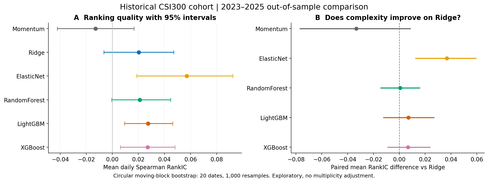
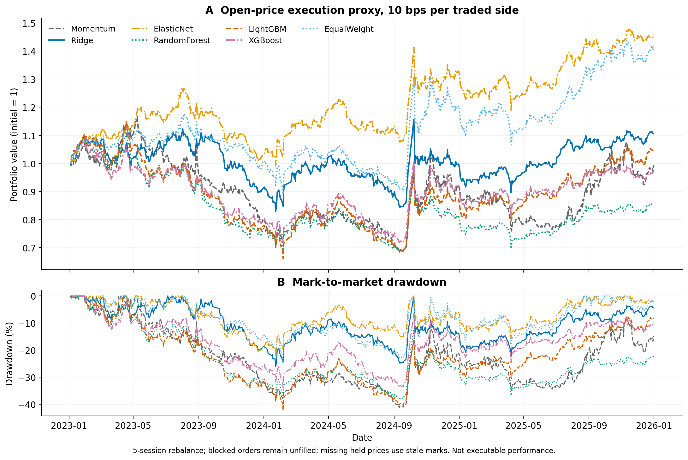
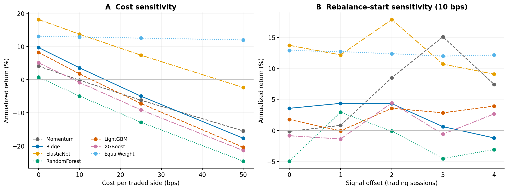
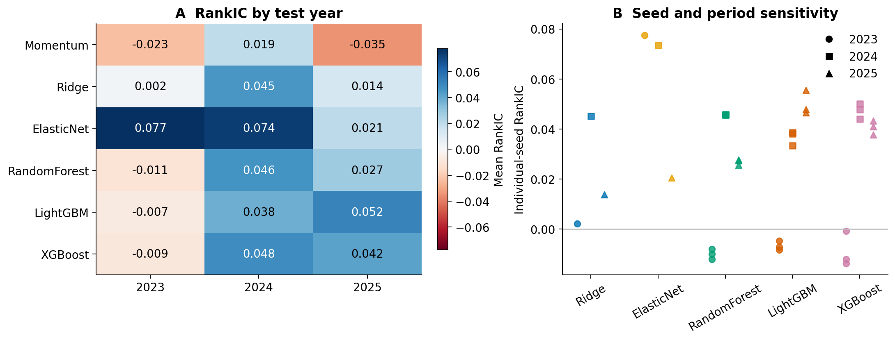

Ridge / ElasticNet
带正则化的线性基线，检验简单结构能否稳健排序。
中国 A 股 · 可复现研究
探索序列与横截面模型，能否在样本外更好地排序未来五个交易日的超额收益，以及这种改善能否经受交易成本的检验。
进行中的研究 · 尚未形成确认性结论
研究市场中国 A 股
标签期限5 个交易日
拟定主要指标RankIC
核心要求样本外 · 扣除成本
研究方法
预测质量、跨期稳定性和经济意义，分别检验。更高的 RankIC 本身并不等于盈利。
固定股票池、观察区间和标签；仅使用预测时点可得的信息，明确真实、缓存、回退与合成数据。
先构造前瞻标签，再按时间切分；清除边界处重叠的标签窗口。预处理仅在训练集拟合。
模型共享日期、标签和覆盖样本的交集。调参与早停使用训练集和验证集，保留最终测试集。
同时报告排序指标、组合表现、换手、交易成本和不确定性，并保留运行标识、配置与数据记录。
概念示意 · 按前瞻标签期限清除边界重叠日期，记录实际排除日期。
首轮实证结果
2018 年历史成分股中固定抽取 60 只，使用 130,505 行真实行情。2023–2025 年共同测试样本：41,456 条、709 个交易日。
本轮 Elastic Net 的平均 RankIC 最高：0.0571，95% 区块重采样区间为 [0.0186, 0.0925]。树模型未稳定优于线性基线；这不是普遍胜出的确认性结论。

| 模型 | RankIC | 年化收益 | 夏普比率 | 最大回撤 |
|---|---|---|---|---|
| Momentum | -0.0129 | -0.2% | 0.13 | -41.2% |
| Ridge | 0.0203 | 3.6% | 0.27 | -26.1% |
| ElasticNet | 0.0571 | 13.7% | 0.82 | -21.9% |
| RandomForest | 0.0210 | -4.9% | -0.14 | -37.8% |
| LightGBM | 0.0274 | 1.8% | 0.19 | -42.2% |
| XGBoost | 0.0271 | -0.9% | 0.07 | -33.8% |
重要限制：收益使用日线开盘成交代理，未完整模拟盘口、冲击与历史涨跌停制度。等权对照有 355 个缺失持仓价格日，退市/合并结算未补全，不能据此断言策略跑赢可交易基准。



Run: 20260928T065633Z_simple_baselines · BaoStock · No synthetic data
比较对象
当前先完成简单模型的共同样本比较，StockMixer 与 LSTM 暂缓。动量和等权股票池提供额外对照。
带正则化的线性基线，检验简单结构能否稳健排序。
以随机森林比较非线性建模的收益与代价。
梯度提升树，参数只按验证期排序指标选择。
另一种梯度提升实现，与其他模型共享数据和目标。
RankIC · IC · ICIR · Precision@K
净收益 · 夏普比率 · 最大回撤 · 换手率
已完成 60 只历史成分股的可校验快照、训练入口记录和逐模型报告。旧缓存无法追溯的部分明确标为未知。
已完成五个简单模型、三种树模型种子、四档成本和五个再平衡起点的比较，结果与代码可在 GitHub 查阅。
本轮只覆盖一个固定历史股票池与五日标签；动态股票池、更广泛的标签期限和真实退市结算仍需进一步研究。
从源码开始